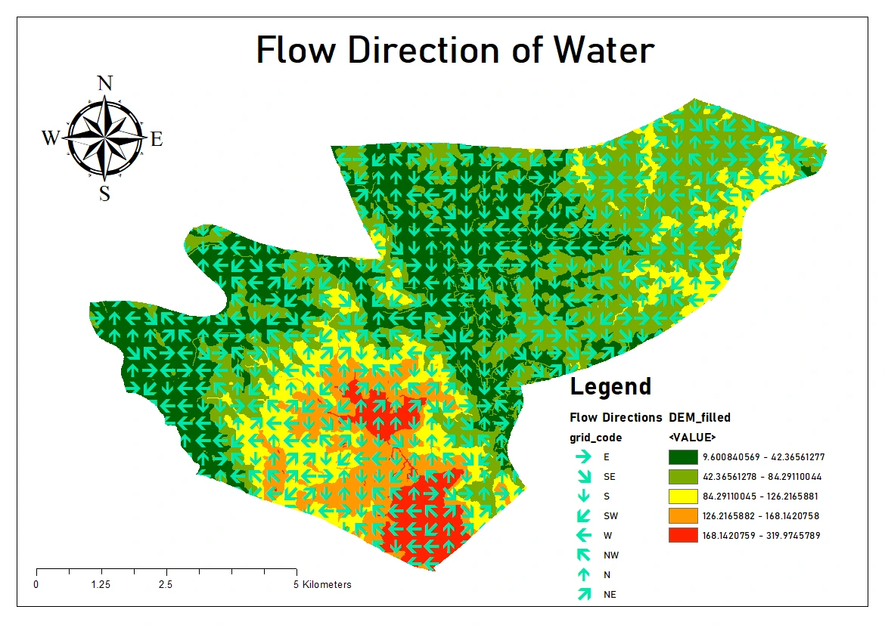
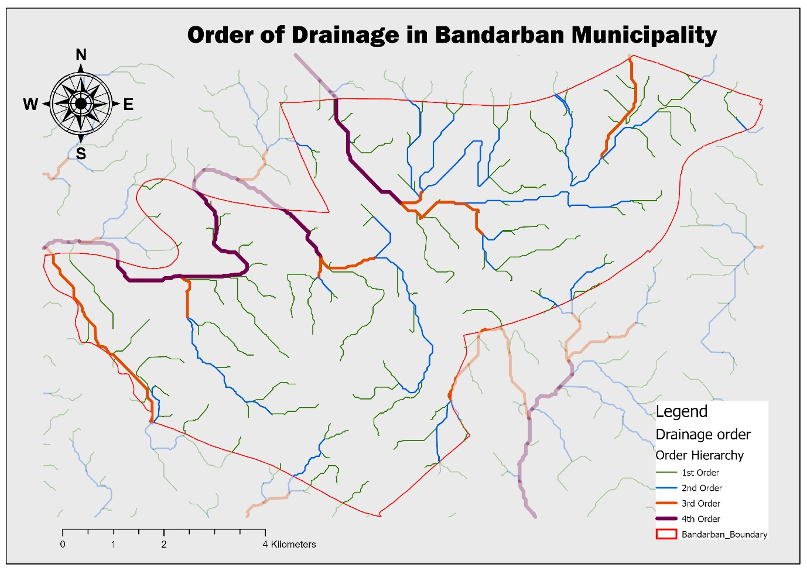
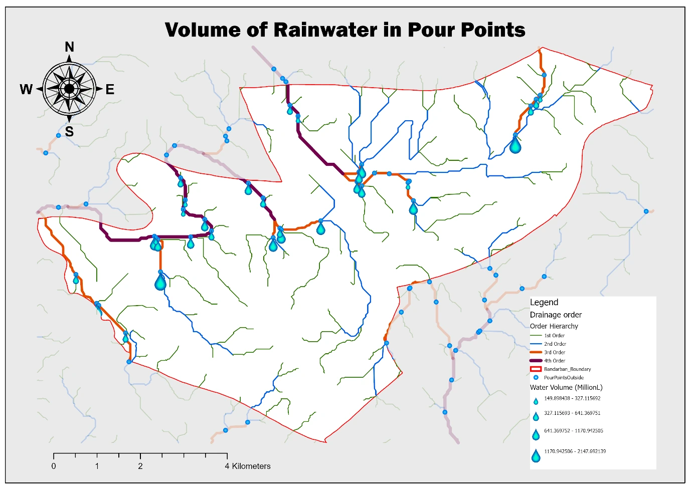

Planning problem
Urban drainage follows terrain rather than administrative boundaries. I used elevation to identify likely surface-flow paths, stream hierarchy, outlets and contributing catchments.
GIS workflow
01Prepare terrain surface
02Calculate flow direction & accumulation
03Extract drainage & stream order
04Delineate pour points & catchments
Selected spatial outputs



Limitations
I treat this as a terrain-based GIS hydrology exercise. Rainfall over a catchment is not the same as runoff, and urban drainage is also affected by land cover, infiltration, roads, culverts and constructed channels. A fuller drainage-design or flood-resilience study would need to include those factors.